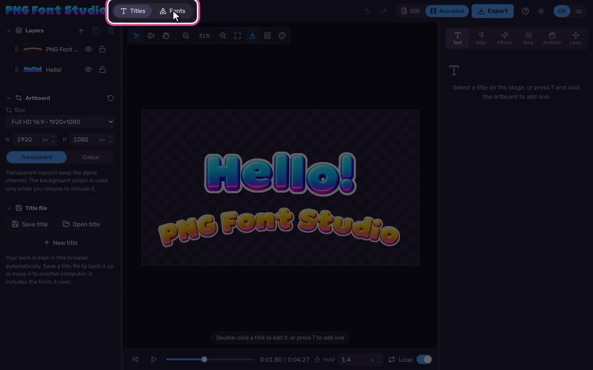

Turn AI letter sheets into fonts, then make titles that move.
PNG Font Studio turns a sheet of letters drawn by an AI image tool into a font you can type with. Then you design titles with it, animate them, and export images, videos or an After Effects composition. It all runs in your browser.

The workspace · videoMake a font
Import an AI glyph sheet. The app finds the grid, cuts out each letter and places it on the baseline.
Design a title
Type straight on the stage, style letters, add effects and warps. Still titles turn the app pink.
Animate and export
Pick how it arrives, moves on screen and leaves (the app turns blue), then export images or video.
What it does
Everything you need to go from a picture of letters to a finished title.
Fonts from glyph sheets
Grid detection, background removal, letter recognition, and automatic placement on the baseline.
Colour variants
Recolour a whole font from its own artwork with presets, hue shifts or gradient maps.
Live text on the stage
Type, select and style letters right on the artboard, with kerning, tracking and baseline shift.
Effects and styles
Stroke, shadows, glows, bevel, 3D extrude, long shadow, reflection and more, or one-click styles.
Warp and paths
Bend a title like Photoshop’s Warp Text, or set the letters along an arc, circle or wave.
Animation presets
Dozens of ways in, on screen and out, each tuned by duration, stagger and order.
Export anywhere
PNG, PNG sequence, WebM, MOV, MP4 with a matte, GIF, animated PNG and WebP, After Effects.
English and Hebrew
The whole app in either language, with right-to-left layout and Hebrew text in titles.
The workspace
Where everything is, how the colours tell you what you’re making, and how to make the layout yours.
Find your way around
- Top bar. Titles designs and animates; Fonts makes the letters. Undo and redo sit next to them.
- The colour tells you what you’re making. Pink is Still (images), blue is Animated (video), and violet is the Fonts workspace.
- Left panel. Layers, the artboard size and background, and your title files.
- Right panel, the inspector. Tabs for Text, Align, Effects, Warp, Animate and Layer.
- Draggable panels. Drag the thin dividers to make either panel wider or narrower. The app remembers it.
- Language and theme. Switch between English and עב (Hebrew, right to left), and between dark and light.
- Help. A guided tour and every keyboard shortcut. Press ? at any time.
The stage toolbar
| Select and move | Pick and drag titles V |
| Text tool | Click the artboard to add a title T |
| Pan | Drag the view H (or hold Space) |
| Zoom out / in | Ctrl + − / =, or Ctrl + wheel |
| Fit artboard | Ctrl + 0 |
| Text guides | Baseline and friends while you type |
| Title-safe | Frames that keep titles clear of the screen edge |
| Preview background | Checkerboard, black, greys, white or any colour. For viewing only; exports stay transparent. |
Make a font
From a sheet of letters drawn by an AI image tool to a font you can type with, then a colour version of it.
Get a glyph sheet: prompt builder
Ask an AI image tool for a sheet of letters in a grid. Attach any image as the style reference (a font sample, a logo, a poster, an illustration or a photo), pick a sheet, and paste the prompt with it. For sheets 2 to 6, attach your finished sheet 1 too, so every sheet matches in style and size. The importer recognises these layouts and names every cell for you. Results vary by tool: if a letter comes out wrong, generate that sheet again, or fix the cell in the importer.
Step by step
- Open Fonts. The app turns violet. Bubble Blue, Orange and Pearl come with it.
- Press Import sheets, then Choose files or drop the sheet on the window. Add several sheets at once if you have them.
- The app detects the grid. If a line is off, drag the blue lines, or set Rows and Columns and press Detect lines or Even grid.
- Under Characters, check the recognised layout. For your own layout, type the characters in reading order (
\sskips a cell). - Check the letters under the sheet; type the right character into any cell that’s wrong.
- Under Import into, choose New font, name it, and press Import.
- Hover over a glyph to see it large. Click it to edit it: drag the letter to move it, drag the dotted line to change its spacing, or type exact Baseline, Scale, Left and Right values.
- Use Auto-place all to put every letter on the baseline, and Even out sizes if letters were stretched to fill their cells.
- Type in the sample line to try the font on real words.
A.png, exclam.png or uni05D0.png (Hebrew alef), or select a slot and paste an image.Guides, variants and files
- Guides show the baseline, cap height, x-height, ascender, descender, advance width and image bounds. Turn each on or off from Guides.
- Edit image flips, rotates, trims and cleans specks off a glyph.
- Colour variants recolour the whole font from its artwork. Each preset shows your own letters in its colours; pick one, or press Open colour editor, to see the whole font large. In the editor, Face recolours the face, rim and 3D depth, Hue shifts all colours, and Gradient maps them to a new gradient. Compare with the Original, check it on a dark, light or checkerboard background, and hover a letter to see it up close. Create variant makes a new font; Apply to this font changes it in place. Besides Orange, Pearl, Gold, Red, Green and Purple, the presets include the five colour transitions from the sheet prompts: yellow to pink, blue to pink, mint to blue, pink to purple and purple to pink.
- Gradient editors (here and in a title’s effects) work like a design app’s: click the bar to add a stop, drag a stop off the bar or press Delete to remove it, and set each stop’s colour, opacity and location. Presets has the five prompt gradients; the buttons beside it add, delete, reverse and evenly space the stops.
- Save font file keeps a copy to share or open on another computer (Open font).
- Export PSD sends every letter to Photoshop, as stacked layers in one glyph box or as a full sheet. Edit there, save, then Update from PSD. Letters you didn’t touch stay exactly as they were.
Still titles
Design a title for an image: type on it live, move it around, style it.
Step by step
- Press Still in the top bar. The app turns pink.
- Press T and click the artboard to add a title, or double-click a title to edit it. Type: it updates live.
- Select letters (drag, Shift + arrows, double-click a word) to style just those: size, tracking, colour, case, underline.
- Press Esc to stop typing. Drag the title to move it, a corner to scale, the round handle to rotate (Shift snaps to 15°). Arrow keys nudge it.
- Effects: click a style, then fine-tune each effect in the list. The top effect is drawn on top.
- Warp: bend the whole title, or set it along a path.
- Set the artboard size and background on the left, and export (see Export).
Good to know
- Text tab: font, size, tracking, kerning (optical, metrics or none, plus pair kerning with Alt + ←/→), baseline shift, scale, rotate and slant, case, colour and letter opacity.
- Align tab: alignment, direction, indents, line spacing, space before and after, and point or area text.
- Layer tab: position, scale, rotation, flip, centring, opacity and blend mode.
- A plain text box sits at the top of the Text tab, for long edits, pasting, or typing on a phone.
- Your work saves itself in this browser. Save title makes a file, fonts included, to back up or open elsewhere.
Animated titles
How a title arrives, what it does while it’s on screen, and how it leaves.
Three parts
- Transition in: how the title arrives. Presets are grouped as cute, cartoony, professional and fun. Set Duration, Stagger between letters, what moves (Letters, Words, Lines, All), the Order and a Delay.
- While on screen (loop): a gentle movement between entrance and exit, like Wave, Float, Bob, Pulse, Rainbow or Shimmer. Set its Period and Strength.
- Transition out: how it leaves, such as Pop out, Float away, Explode or Fade down.
The player
- Play / pause with the button or K; drag the bar to scrub.
- Hold sets how long the title stays on screen between its entrance and exit.
- Loop repeats playback while you work.
Export
Images, videos with or without transparency, and editable After Effects compositions.
Which format?
| Format | Transparent | Best for |
|---|---|---|
| PNG image | Yes | One frame: the current frame, or a Still title. |
| PNG sequence | Yes | Every frame in a ZIP, for After Effects, Premiere, DaVinci, Final Cut. |
| WebM video | Yes | Video with transparency for the web, OBS and Chrome. |
| MOV video | Yes | Lossless video with transparency (QuickTime Animation). |
| MP4 video | With matte | Plays everywhere. A transparent title comes as a ZIP with a black-and-white matte video. |
| GIF | Hard edges | Chat stickers. |
| Animated PNG | Yes | Soft transparency that plays in every browser. |
| Animated WebP | Yes | Small files with soft transparency. |
| After Effects | Yes | An editable composition: a script builds it with each letter on its own layer. |
Step by step
- Press Export in the top bar.
- Pick a format. Still titles show the image formats only; switch to Animated for video.
- Choose the Size: 1× is the artboard size, 2× twice as sharp.
- Options: Trim to the title crops empty space, Include background colour fills behind the title, Only the selected layer exports one title. Video formats add frame rate and looping.
- Press Export. The file downloads.
Transparency in video editors
- MP4 + matte: put the matte video on the track above the colour video, and set it as a luma (track) matte. White shows the title; black hides the background.
- After Effects: unzip, then choose File › Scripts › Run Script File and pick the
.jsx. Animation becomes keyframes on each letter; effects without an After Effects match are listed in the README. - MOV works on this website. Inside claude.ai, pages can’t save MOV files; use WebM there, or open the app from this site.
Good to know
Shortcuts, saving your work, phones, Hebrew, privacy, and answers to common questions.
Keyboard shortcuts
| Ctrl Z / Ctrl Shift Z | Undo / redo |
| V T H | Select, text tool, hand |
| Enter or double-click | Edit the selected title’s text |
| Esc | Finish typing |
| Arrow keys | Nudge 1 px (Shift: 10 px) |
| Alt ← → | Kern the pair at the caret, or track a selection or title |
| Alt ↑ ↓ | Line spacing (Shift: baseline shift) |
| Ctrl Shift > < | Bigger / smaller text |
| Ctrl D · Delete | Duplicate · delete a title |
| Ctrl 0 · Ctrl + wheel | Fit · zoom |
| K | Play / pause |
| Right-click | Commands for what’s under the pointer: a title, a layer, a font, a glyph, a panel, a gradient stop |
| ? | All shortcuts in the app |
On a Mac, Ctrl is ⌘ and Alt is ⌥.
Saving and moving your work
- Titles and fonts save themselves in the browser you’re using, on this device.
- Another browser, a private window, or clearing this site’s data won’t have them. Keep copies with Save title (fonts included) and Save font file.
- To move to another computer, save a title file there and Open title here.
Phones and tablets
- On a phone, the panels share a sheet under the preview: Layers and Edit. Drag its handle to make it taller or shorter.
- Double-tap a title to type on it; the keyboard opens. The text box in the Text tab is handy for long edits.
Privacy
Everything runs in your browser. Your sheets, fonts, titles and exports stay on your device; nothing is uploaded.
Hebrew and right to left
- Switch the app to Hebrew with עב (or Help › עברית on a phone). The layout mirrors for right to left.
- Type Hebrew in a title, and it runs right to left on its own, even mixed with English and numbers.
- The built-in fonts have Latin letters. For Hebrew, import a sheet of Hebrew letters and type them in reading order in the importer’s Characters box. The glyph sheet shows Hebrew right to left.